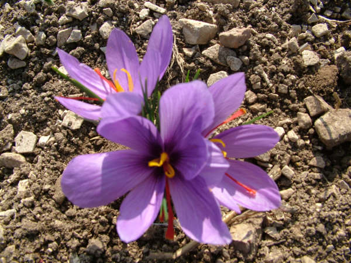
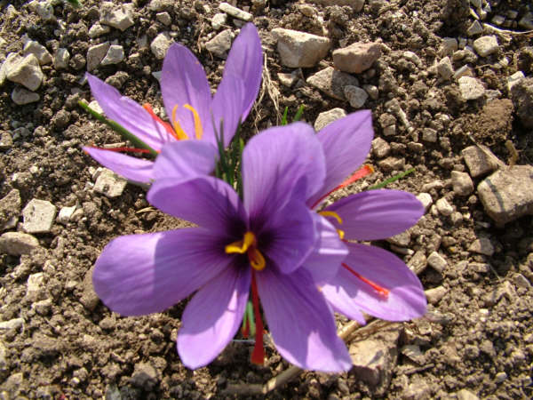

Safran Çiçeği
Safranbolu’ya adını veren “Safran” çok eski çağlardan beri çiçek tepecikleri, baharat ve gıda boyası olarak kullanılan soğanlı bir bitkidir. Çiğdemle yakın akraba olan bu bitkinin (Crocos Savitus) anayurdunun Akdeniz ve İran olduğu sanılmaktadır.Ortalama 20-25 cm.ye kadar boylanabilen safran bitkisi Ağustos Eylül aylarında soğan şeklinde ekildikten sonra Ekim ayında huni biçiminde mor çiçekler açar. Çiçeklerin tam ortasında üç parçalı, kırmızımsı turuncu tepecikler yer alır.
 



Sabah güneş doğmadan toplanıp kurutulan ve baharat olarak kullanılan bu organlar bileşimindeki koyu sarı renkli boyama maddesinden ötürü içine katıldığı yiyeceği sarıya boyar. Çiçekler açtıktan sonra tepecikler tek tek elle toplanıp kömür ateşinin üzerinde bal mumu ile karıştırılarak kurutulur. Yaklaşık 10 gram safran elde etmek için 1430 tepecik gereklidir.Bu nedenle pahalı ve değerli bir ürün olan safranın yerini günümüzde başka gıda boyalar almış olmasına rağmen Akdeniz ülkeleri İle İran ve Keşmir’de hala yaygın olarak kullanılmaktadır. En çok balık ve pirinç yemeklerine, bazı Akdeniz ülkelerinde ise ekmek ve pastacılık ürünlerine katılır. Kentimizde ise safrandan zerde adı verilen pirinçli bir tatlı hazırlanmaktadır. Çok eski çağlardan beri İran ve Keşmir’de tarımı yapılan safran yalnızca baharat olarak değil, çeşitli dönemlerde hastalıkları iyileştirici koruyucu bir madde olarak da değer görmüş, hatta renginden ötürü kutsal sayılmıştır. Safranın tanınması ve çeşitli amaçlar için kullanılması 5000 yıl öncesine dayanmaktadır. Günümüzde en çok safran üretilen yerlerin başında İspanya, Fransa, Sicilya, İtalya, İran ve Keşmir gelir. 19.yy ortalarında Osmanlı devletinden Yurt dışına satılan safranın önemli bir bölümü Safranbolu’da üretilmiştir. Sarı boya hammaddesinin elde edildiği safran sentetik boyalar üretilinceye kadar eczacılık ve boya sanayiinde kullanılıyordu. Kendi ağırlığının 100.000 katı suyu sarıya boyayabilecek kadar kuvvetli bir boyama özelliğine sahip olan safran, halen Safranbolu ’nun Davutobası, Geren ve Aşağı Güney köylerinde üretilmektedir. İlçemizde Safran üretimi İlçe Tarım Müdürlüğü ve Safranbolu Kaymakamlığı Sosyal Yardımlaşma ve Dayanışma Vakfı tarafından desteklenmektedir. Kaymakamlık Hizmet Birliği Kültür Yayınları tarafından , “Safran”, “Safran ve Safranlı Yemek Tarifleri” isimli kitaplar yayınlanmıştır.